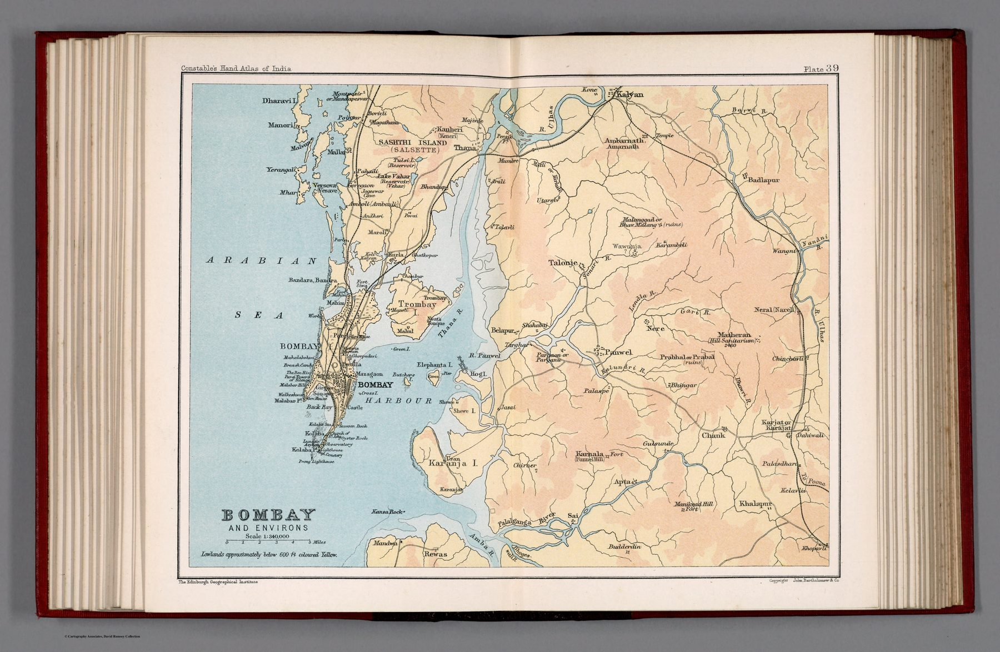

← Home Ground Bombay and Deccan

The atlas plate
Plate 39 was prepared at the Edinburgh Geographical Institute under John George Bartholomew for Constable’s Hand Atlas of India (1893). The atlas drew upon official and other surveys but translated them into compact, commercially published reference plates.
City and hinterland
At approximately 1:340,000, the map links Bombay to the country around it. Roads, railways, settlements, coast and relief show the metropolis as the hub of a regional transport and harbour system.
Layer-coloured relief
Elevation tinting makes physical setting analytically visible. The method belongs to Bartholomew’s modern cartographic style: colour is a coded means of distinguishing height and terrain.
The gaze
Seen at this scale the city is small and its harbour large. What the plate chiefly records is the water and the tinted ground that enclose Bombay – the approaches a ship must take, the terrain a railway must cross – so the metropolis of the preceding plate shrinks to a point from which lines radiate.